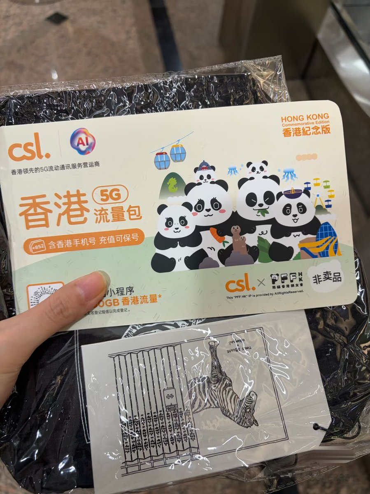
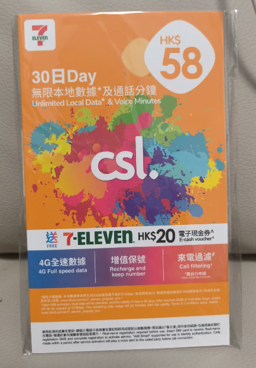

嫣敏🍥（主页抽奖进行中）
@yanmin1105
@sino_go_global 每月20HKD的成本我觉得这么贵不如用大湾区蓝卡，蓝卡半年50HKD


浪险 | 出海基建·港美卡·云居民
@sino_go_global
国庆去香港，记得顺带领下这个手机卡，免费！
一般人我不告诉他🥳
这个CSL的熊猫卡 比 711里面卖的 CSL 橙卡好(P2)！
地点：
1、铜锣湾时代广场
2、启德崇光百货
产品要点：
熊猫卡
7 天 50g 香港流量
1g 亚太流量
每月20 hkd保号
无行政费
随手福利，持续分享。可以先收藏别漏了~
#CSL https://t.co/NDEVujXjd3